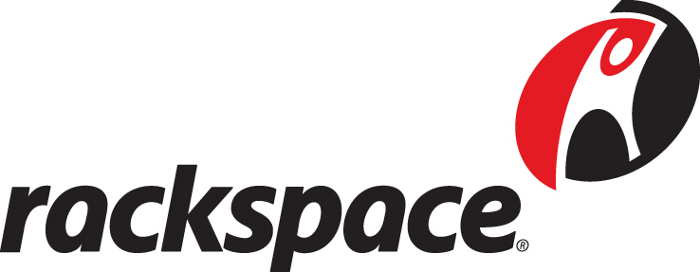
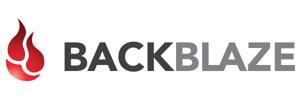
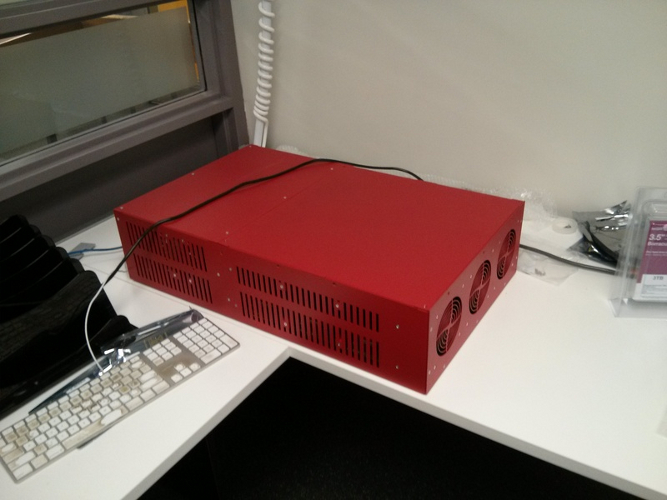
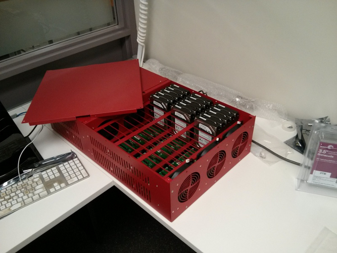

You are not an imposter. What you have to say is important. John and I are here today to talk about a project we're working on with the Ontario Council of University Libraries; OCUL represents the 21 university libraries in Ontario, Canada. The project is not officially off the ground yet, but nearly there. We had hoped to give a little more, stuff like what we're going to talk about doesn't come in over night. This is TOTALLY NOT VAPORWARE.
Strong and Free:
Building a Resilient Data
Store North of the Border
Nick Ruest, York University
John Fink, McMaster University
Little bit of an overview here. What I am going to do in my portion of the presentation is go over some background info and try and provide some context at the same time. Then a little bit later, I'll finally get to what we are trying to do. After that, John is going to get into the technology stack, and all the great stuff behind that.
Overview
Background
Context
What we're trying to do
Technology Stack
What I want to do here is get a show of idea of how and if other folks have begun thinking about this. So, just raise your hands where applicable. Question 1: How much storage do you anticipate needing in 3 years? 10T or less, 10s of T, 100s of T, 10s of P, 100s of P? Question 2: Are your storage needs for large object, small objects, or combination of both? Question 3: Where do you look for storage solutions? Library IT, Campus IT, Partnerships, Commercial?
Background
I have some questions for you!!!
I'm going to go a couple of tangents here before I get to the meat of the presentations. So, please bear with me and hopefully this will all make sense in the end. In my first tangent, I'm going to try and convey some broad observations about working in two completely different organizations. I am not trying to say one organization is better than the other, or get up here and pile on McMaster, because I'm not sure how much more they can take. And! In all honestly, I loved the team of folks I worked with there. I just didn't like this one guy.
What I've learn about two very different organizations
You can be really bleeding edge. Jump on every new technology the second it comes out. And maybe even run your production servers on Arch, updating twice a day. Or you can be slow as molasses, overly-cautious to a fault, and extremely conservative; like only upgrading your Wordpress instance one a year. NO! NO! NO! There has to be a balance somewhere in there. Ideally, something with balanced traits: lean, agile, nimble, responsive, adaptive.
Movement
Ego is so incredibly counter productive. I hate hate hate EGO. Who cares if you are the first to do buy something. Who cares if you were the first to implement something. Don't micromanage, and control access to a team just because you're threatened by other people. What is more import is our community. Our users. Ego gets in the of doing really awesome things, but most importantly it really gets in the way of our values and ethics of our profession, and at the worst of times is a complete disaster.
Ego
That whole strengths and weaknesses thing. Organization A is really good at this one thing, but really horrible at this other thing. Organization B is really good at that thing Organization A horrible at, and Organization A really good at that thing Organization B is horrible at. They should totally talk. They should collaborate on this stuff!
Collaboration
Now, time for tangent number two; SUSTAINABILITY!!! Or, where I try to show how I learned how to distill a 105 page report to 5 talking points - Blue Ribbon Task Force Report on Sustainable Digital Preservation and Access. If Dorothea is in the room, I hope I make her proud :-)
Sustainability
ask audience - how many of you have preservation written into their strategic plan
Recognition of the benefits of preservation by decision makers
ask audience - how many of you have a committee, or group that evaluates digitization projects
a Process for Selecting digital materials with long-term value
ask audience - does your administration (library or university) truly understand the responsibility in stewarding cultural heritage? is there funding available?
Incentive for decision makers to preserve in the public interest
ask audience - how many of you have operational conditions for digital preservation (committees, working groups, strategy/implementation plan/plicy)?
appropriate Organization and Governance of digital preservation activities
ask audience - how many of you have an ongoing budget line for digital preservation?
mechanisms to secure an ongoing, efficient Allocation of Resources for digital preservation activities
How do those those 5 points look for you at your org? My org looks pretty good on most of them. Since I'm a bit of socialist, and care about my fellow man, what about other folks in the consortia? Wouldn't it be easier to work together in a consortium to take care of this instead of reinventing the wheel locally at each institution?
Locally or Consortially?
When I was back a McMaster we had about 20TB of data that we needed to have a preservation copy stored somewhere. Duracloud/portico, etc where not an option due to cost (I'll speak more to that in a bit). I knew that a Scholars Portal was going through TRAC Certification (trustworthy digital repository), so I asked a colleague there what they were doing for off-site preservation. Long story short, we realized that our "collections" were around the same size, and initially planned on mirroring our content at each institution. From there (after talking to our bosses about this, it expanded into a conversation into how can we do this cosortially, and we've been working on that ever since.
Hacking Organizations
...or how Nick is incredibly naive
Get to the point man!
What are you trying to do!?
This is a shameless rip-off. Canadian version of the San Diego Super Computing Cloud Storage Services (those rad dudes out at UCSD). Yes we have blessings! We're working with them administratively and technically.
CLOUD.SDSC.EDU
We've identified a need to provide archival storage capacity for digitized and born-digital collections. Right now, we have a few options, but they fall between the polar extremes of Glacier (at $10/TB) or DuraCloud using Rackspace or S3 (at $1300/TB). Duracloud/S3/Rackspace are not sustainable as collections grow in size, and Glacier is not sustainable insofar as lacking the ability to audit fixity information in a way that is not cost prohibitive due to bandwidth costs. Moreover, all of these solutions are not within Canadian jurisdiction. We need something that is not susceptible to the Patriot Act and the like.
Our Context
We are now looking at more than 10 years for some libraries engaging in digitization projects, others engaging in mass digitization projects, others acquiring massive born-digital collections of audio and video, and university libraries now engaging in research data archiving. Moreover, long-term preservation of digital content requires active management, which requires facilities for storing digital content online, monitoring its fixity, and migrating to new formats over time.
Our needs
Small digitization projects
Mass digitization projects
Purchasing or accepting large born-digital donations
Research data
BACKUPS
!=
DIGITAL PRESERVATION
This is something I seemingly have to combat over and over again on the hard IT and administration side of things. Backups are NOT digital preservation. Let's say that one more time. BACKUPS ARE NOT DIGITAL PRESERVATION. Backups are a part of digital preservation, but have a backup is not digital preservation. I will repeat myself one more time, Long-term preservation of digital content requires active management, which requires facilities for storing digital content online, monitoring its fixity, and migrating to new formats over time.
Storage Hierarchies
Print libraries have used a hierarchical model for storing content for many years. High use material is kept on reserve. Core collections are kept in stacks close to users, and low-use material are kept in off-site storage facilities. Storage requirements for digital libraries similarly map to hierarchical terms as well. In this generalized graphic, we have high-availability services (indexes and transactional databases) at the top, beneath that we have we have content that researchers and students use on a daily basis (journal articles, eBooks, and other published resources), then at the bottom we have tape storage services that provide high-capacity, low-cost replication, and off-site distribution of the data with very lengthy retrieval times.

Yep, I totally skipped over one. Archival storage of digital objects requires storage with very high-capacity, mid-range retrieval speeds, all at a low cost. This type of storage is generally very difficult for libraries to acquire. It is not normally available through central IT, and the commercial options have lots of drawbacks. Let's see what our options are.
S3 is Amazon's established service for high availability cloud storage. If I decided to use S3 for that 20TB collection I mentioned earlier, I'd be looking at a $85k/yr bill. In the context of dark archiving, Glacier is of great interested with its $10/TB price point. But, it is a mostly untested service for archiving digital objects given the bandwidth costs. For example, to perform fixity checks once a year on 150TB, it would cost approximately $27,000.

Rackspace is a cloud services company that provides services very similar to Amazon AWS, and mimics Amazon's APIs. Pricing is very similar to Amazon's S3 services - so, something like that $85k/yr price point for the 20TB collection. Currently they do not offer a comparable service to Glacier.

Backblaze is a low-cost backup service designed for individual consumers. As a consumer solution, it is not a viable option for library archiving needs. Their price point of $4/month for unlimited sets is very appealing, but the service is tied to a single MAC address.

DuraCloud resells space from Amazon S3 (I believe Glacier now), Rackspace, San Diego Supercomputer Centre (see where we're going with this :-) ). It adds digital preservation & management tools and increased levels of redundancy. Currently their prices range from $1,300 to $6,900 per terabyte depending on volume and options.
Portico has been discussing, for several years, the viability of offering archival services for locally created content in addition to their existing role as an archive for publishers' output. The last update to the project that I am aware of was published on the Portico site in 2009. So, none of these look very appealing once you take a good hard look at them. Oh yeah, they're all American too. :-) So, what are we to do?
Community Storage Clouds
Private or community based storage clouds are what we're looking at as an alternative to commercial cloud services. By using an open source stack like Openstack (which John will talk about more in a bit), we would not be tied to a particular hardware vendor, thereby allowing us to build our own solution with commodity hardware. Some more advantages include: reducing bandwidth charges, and allowing us to maintain physical control over hardware.
COMPONENTS (read the points): 1) off-the-shelf storage arrays using consumer-grade disk drives 2) middleware takes care of replication and automatic restoration of data from failed disks 3) routing data across geographic areas 4) Openstack API which is basically the S3 API 5) Remote management -- web based interface for users/institutions 6) scale out to 100s of petabytes 7) Now over to John to talk more about a potential hardware and software solutions.
Components
Commodity hardware
Middleware replication and restoration
Geographic diversification
Block and object storage using a common API
Remote management
Scalabiility


So this company Backblaze, which is itself a cloud hosting provider ala Dropbox, Amazon etc. etc., did something sort of amazing. They engineered a relatively-super cheap box that is designed to be populated with cheap-ish desktop drives. Then they released the design of the box for free for anybody to implement. Think open source software, but for hardware, like an Arduino. The cheapness of this allows them to treat the entire box as a FRU, so they have a chunk of them sitting around and when one box fails they can slide in another.

So here's a picture of the pod we have. It has 45 bays, of which we are currently using 15, but we plan on maxing out to 45 in production. At 3TB each, that gives us 135 TB of storage of a price at about $10k, compared to (I think?) $2 MILLION over three years for comparable storage on Amazon S3. The drives are nothing special, they're all just whatever you'd have in your desktop. This allows us to cut costs by big chunk by not buying server ready type drives. All it basically is is a normal desktop PC with a ton of drives in it and a bunch of sorta-redundant power supplies and fans and such. Turning it on sounds like a jet engine, so you don't want to have this on your desktop. It's a straight x86 machine, so whatever Linux or so you want to shove in it will work. Dig those rubber bands around the drives -- those are shock absorbers!
What is OpenStack?
- "Infrastructure as a Service"
- "...massively scalable cloud operating system..."
- ... oh god the cloud
ask if people are confused. Ask if people are sick of the cloud yet. It's IaaS! What's IaaS?
With a local OpenStack you could...
- ... easily spin up server space for projects
- ... do that fun Big Data stuff you've heard about
- ... do lots of backups
This might be a bit out there for most of us -- hard to think of use cases where you'd need be your own Amazon. But but but, in universities -- especially in universities without a heavy STEM or comp sci contingent -- there's a real possibility that the library can fill a role for computing infrastructure. As we move more and more into things that take a lot of space -- digital objects -- having large storage arrays locally makes more sense.
OpenStack Swift
We're primarily interested in Swift, which is the OpenStack S3-Alike. It's a massively scalable system in which files can be written to multiple spread out servers -- think a RAID array writ large. Most implementors of OpenStack Swift will have lots and lots of bricks. We're looking at two per site for three sites initially, in fitting with the FRU-able nature of the Backblaze pods.
How OpenStack Swift (and S3, and etc) differs from traditional storage
Traditional storage:
- A drive (or logical group of drives)
- Namespace similar to existing (C:, /home)
- Not easily expandable/adjustable
OpenStack/swift/S3
- Not mounted as traditional drive
- Can be grown/shrunk more easily than, say, a RAID array
- exists 'out there'
- Is addressable via a REST interface
This requires a huge change in how crusty old people like myself think about drives and storage. When I think storage, I think ok, I have /home or /tmp or whatever and I deal with it using UNIX commands like mv or cp. But for programming languages, this is less than ideal -- OpenStack and other RESTful things are not meant for people to be futzing around but programs, and it's much easier for someone to, say, write a Rails app that talks to OpenStack than to write one which has to write to a drive in the way we usually think about writing to drives.